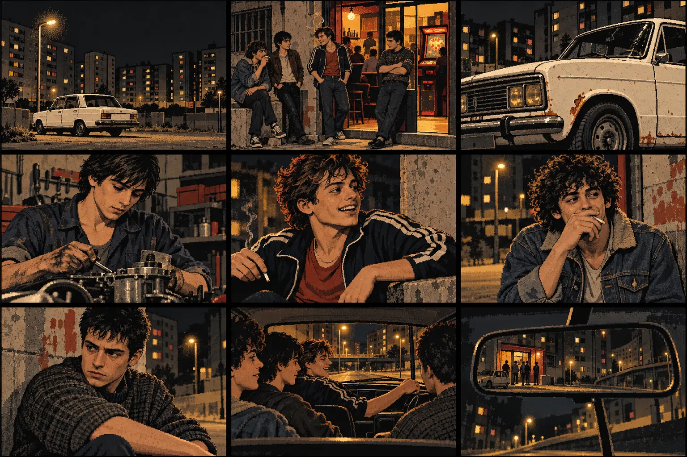

Los chicos del bloque
Sant Roc, 1981–1991. Una noche que arrastra a Dani, Javi, Melli y Sebas durante diez años.
HOMENAJE AL CINE QUINQUI · UNA HISTORIA DE I. ROIG
Una noche. Diez años. Ningún atajo para escapar de lo que hicimos.
CAMPAÑA · ≈30–40 MIN · 21 ESCENAS + 3 RUTAS EN EL ACTO II · 3 FINALES
Drama criminal, accidente y presión policial no gráfica · Ficción interactiva · Sin telemetría
Dani conoce los motores. Javi sabe conseguir que los demás digan que sí. Melli bromea cuando está nervioso. Sebas ya ha visto cómo acaban algunas noches. Frente al Bar Manolo, un SEAT 124 lleva tres noches esperando. Lo que empieza en 1981 no termina hasta diez años después.
QUINQUI · LEALTAD · RESPONSABILIDAD · MEMORIA
EL ARCHIVO 404
Sant Roc, 1981–1991. Una noche que arrastra a Dani, Javi, Melli y Sebas durante diez años.
Badalona, 1989. La Reme sabe que en el barrio algunos paquetes pesan más que otros.
Un videoclub, una cinta imposible y un grupo que no debió rebobinar.
1997. Motos, amistades y promesas que llegan con el módem conectado.
Can Portell, 2008. Volver a veces significa entrar otra vez en la misma historia.
La campaña 01 está completa. Las otras cuatro historias están en el archivo y se adaptarán como campañas independientes.
EXPEDIENTE 01 · UNA NOCHE EN SANT ROC
La aventura presenta ramificaciones de “y si…”. El manuscrito conserva su versión propia de los hechos.